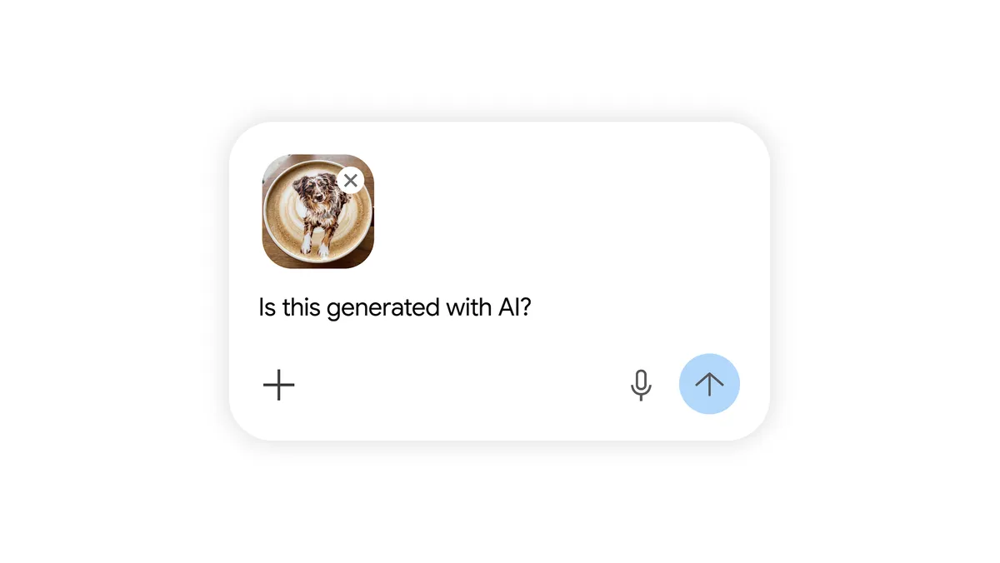

Executive Summary
On August 14, 2026, Google let users switch off the sparkle icon that had been stamped on images, videos and music made with Gemini. Open the settings, switch the media watermark option off, and nothing generated after that carries a visible AI mark. The setting rolls out over several days, and in Korea only paying subscribers get to see it.
What went away is not the marking but the way of reading it. SynthID, written into the pixels themselves, and the C2PA Content Credentials carried in file metadata both go in regardless of the toggle. Neither layer is visible to a person, and each needs a decoder or a parser. Google publishing Credentio, an open-source library for verifying C2PA, on the same day is the other face of the change.
You can still check. Checking now takes a tool, and not everyone has one. The shape of that will be familiar to anyone who has worked on data lineage. A history written into metadata exists only where a pipeline reads it.
Key Numbers
The invisible layers are already spread wide. The side that has to read them is only now being built out.
Sources: Google Blog, Google Developers Blog, Digital Trends
100B+
Images and videos carrying SynthID
Cumulative since 2023, alongside 60,000 years of audio, as Google reported in May
50M
AI checks run in the Gemini app
Using the feature starts with uploading a file and asking about it
0
Signing features in Credentio
It only verifies today. Creating credentials and embedding them sits on the roadmap
3
Countries where only paying users get the toggle
Korea, India and Vietnam. Free users keep the visible mark
What Google Turned Off
The announcement came on Friday, August 14. According to a post on X by Josh Woodward, the vice president who runs Gemini, the toggle covers the image model Nano Banana, the video model Omni and the music model Lyria. It appears first in the Gemini app and in Flow, the video editing tool, with Search to follow. The rollout runs over several days, and users find the control under the media watermark option in settings. Whatever they choose applies to the images, videos and music they generate afterward.
Google framed the decision as a balance. Woodward wrote that the company was balancing creative control against safety, and added that while the visible watermark is now optional, the invisible SynthID signal and C2PA metadata remain in place for transparency, so anyone can still confirm through Gemini or Search whether something was made with AI. The premise of the whole change sits in that sentence. Verification did not become impossible. It became a different act.
The size of that discretion becomes clear once you look at what the law actually asks for. Article 50 of the EU AI Act has required, since August 2, that providers of generative AI mark their output in a machine-readable form. It does not ask anyone to stamp an icon a person can see. The sparkle in the corner went beyond that requirement as a product choice Google made on its own, which is why removing it was also Google's to decide. The exceptions are the countries that mandate a visible mark separately.
The request came from users first. Gizmodo, citing Android Authority, reported that when Woodward asked a few months ago what people found most annoying about Gemini, removing the visible watermark from Nano Banana landed in the top ten answers. For people using the image tools, the most irritating part of the product was the visible trace that AI had been involved.
That is exactly where the criticism lands. Engadget pointed out that the visible watermark existed in the first place to give people a fast way to recognize AI content, and that this decision weakens the purpose Google set for itself. The two remaining layers still support verification, but only after someone thinks to ask a chatbot or upload a file to a checking tool. Between seeing a mark and looking one up sits that much friction.

The Pixel Signal Survives, the Metadata Gets Stripped
The two layers that remain work differently. SynthID, the watermarking technology Google introduced three years ago, embeds a signal no person can perceive directly into the pixels of images and video and into the waveform of audio. In May, Google said the technology had been applied to more than 100 billion images and videos and to 60,000 years of audio. C2PA Content Credentials take another route. They record what made a file, when, and how it was edited afterward, sign that record, and attach it to the file's metadata. The first is a signal cut into the content. The second is a résumé traveling with the file.
Their durability differs too. Gizmodo noted that erasing a visible watermark takes no more than cropping or covering it, that C2PA metadata is easy to strip, and that most social platforms remove some or all metadata during upload anyway. Anyone spreading misinformation would not have to lift a finger. SynthID is tougher. Because it is encoded in the pixels, it is designed to survive cropping, downscaling and quality loss, and in Ars Technica's testing, repeated degradation did make detection harder, though by then the image itself had been mangled beyond use. The technology was never built to withstand adversarial attack, however, and the same reporting noted that commercial services and public tools advertising removal already exist.
Lining the three layers up side by side makes the move visible. What disappeared is the weakest layer and the one the largest number of people could actually read.
What Google Shipped That Day Was a Verifier
On the day it announced the toggle, Google open-sourced Credentio. It is a C++ library for handling C2PA Content Credentials, and it supports versions 2.2 and 2.4 of the specification. Its job is to look closely at the manifests, assertions, digital signatures and claim structures inside a file and report validation results along with integrity errors. Developers can use the official C2PA trust list or supply one of their own. Google described the timing as a response to AI transparency regulations and media provenance standards now taking effect around the world.

The notable design choice is that verification happens entirely on the local machine. Files never travel to the cloud, so there is no bandwidth cost, little latency, and no media content leaving the premises. Google also says the library keeps memory use low when handling multi-gigabyte videos or high-resolution images. This is not new code either. Close to 40 Google products have already been running it across tens of billions of assets. The repository is open at mediaprovenance.googlesource.com.
Verification is all it does for now. Creating credentials and embedding them into files is not yet available, and Google has put that on the roadmap. Opening the verification side first fits the policy change. Once the visible mark becomes optional, the burden of confirmation shifts from the party generating the file to the software on the reading side. Where that software has not been built into an app or a server pipeline, the history inside the file stays a record nobody looks at.
Back in May, Google also said it was preparing a cloud-hosted AI content detection API for developers, one that would detect AI content made by other companies as well, starting with a group of trusted partners. This library release sits on the same trajectory of pushing verification tools outward, beyond the company itself.
In Korea, Your Subscription Decides Whether the Mark Stays
The toggle does not open the same way everywhere. Woodward wrote that the rollout excludes countries where the law requires the mark to stay, and Engadget reported that the EU is among them, because its recent AI transparency rules mandate a visible watermark on deepfakes that are hard to distinguish from reality. Korea, India and Vietnam are a different case. According to Digital Trends, only paying AI Ultra subscribers in those three countries can use the toggle, while everyone else keeps the visible watermark on their output automatically. Work and school accounts do not get the setting at all.
| User | Toggle | Default state of the visible mark |
|---|---|---|
| EU and other countries that require it by law | Not offered | Always stays |
| Paying subscribers in Korea, India, Vietnam | Available with an AI Ultra subscription | Disappears when turned off |
| Free users in Korea, India, Vietnam | Not offered | Always stays |
| Work and school accounts | Not offered | Always stays |
| Everywhere else | Available to all users | Disappears when turned off |
Compiled by Pebblous from reporting by TechCrunch, Engadget and Digital Trends.
For users in Korea the table means something simple. Most people will keep seeing the visible mark for a while yet. Engadget added that Korea made a similar move earlier this year. Domestically, the AI Framework Act took effect in January 2026 and brought an obligation to disclose that generative AI output was made by AI. What Google applied to Korea, though, is not a legal block but a distinction drawn by subscription tier. Inside one country, work made by paying users and work made by free users now follow different marking rules.
There is a reason this map was drawn in August in particular. Article 50 of the EU AI Act took effect on August 2, placing a machine-readable marking obligation on generative AI providers, with penalties for violations reaching up to €15 million or 3% of global annual turnover, whichever is higher. In the ten days or so that followed, two companies moved.
Anthropic moved in the opposite direction that same week. On August 11 it committed to embedding C2PA-based invisible watermarks in text and files produced by Claude, again to meet EU requirements. Anthropic offers no way to switch it off. The two companies gave their users opposite amounts of discretion, yet the place where the record lands is identical. Both chose a layer no human eye can read.
Are Your Ingestion Paths Reading That History?
Anyone who works with data has seen this arrangement before. The fact that a table carries lineage information and the fact that our pipeline actually reads it have always been two separate facts. A column description sitting in the catalog might as well not exist if the loading code never consults it, and an update timestamp sent by a source system leaves no trace anywhere once ingestion throws it away. What just happened to C2PA has the same shape. The history is in the file, and it exists only where code reads it.
Any organization with a repository that images flow into has three questions to ask.
- How many of your ingestion paths actually parse and record the C2PA manifest? Count the crawlers, the upload forms, the partner transfers and the in-house generation tools separately, and the answer usually comes close to zero.
- Where does the history get stripped? Not only social uploads. Internal resizing, format conversion and CDN re-encoding all drop metadata quietly.
- How are you treating files that carry no mark? The absence of a mark does not mean a human made it. Both Google and Anthropic have said the mark may not survive format conversion or re-saving.
Answering those three means opening the files and reading them, and the code that does that happened to be published the same day. A verification library now exists. What is left is deciding where in the ingestion path it goes.
The argument for treating watermarks as ecosystem instrumentation rather than per-file verdicts has already been circulating in the research literature, and so has the shift from detection accuracy toward provenance records in industry discussion. This event is where that discussion showed up in consumer images and video.
Editor's Note: What Pebblous runs into most often on data quality engagements is not missing lineage. It is lineage that has been recorded and that nobody reads. As of August 14, images and video sit in that same place. Requiring a mark and building a path that reads the mark are separate pieces of work, and the second one has mostly not started.
References
Official Documents
- 1.Google Developers Blog. (2026). "Introducing Credentio: Open Source C++ Library for C2PA Content Credentials from Google."
- 2.Richardson, L., Kohli, P. (2026). "Making It Easier to Understand How Content Was Created and Edited." Google Blog.
- 3.EU AI Act. "Article 50: Transparency Obligations for Providers and Deployers."
Industry & Press
- 4.Mehta, I. (2026). "Google Will Now Allow Users to Remove Visible Watermark From Its AI Generations." TechCrunch.
- 5.Engadget. (2026). "Google Will Now Allow Users to Remove Visible Watermarks From AI Content."
- 6.Digital Trends. (2026). "Google's Gemini App Adds a Toggle to Disable AI Watermarks, With Some Exceptions."
- 7.Gizmodo. (2026). "Google Opens the Gates of AI Slop Hell."
- 8.TechCrunch. (2026). "Anthropic Says It Will Watermark Text Generated by Its AI Models."